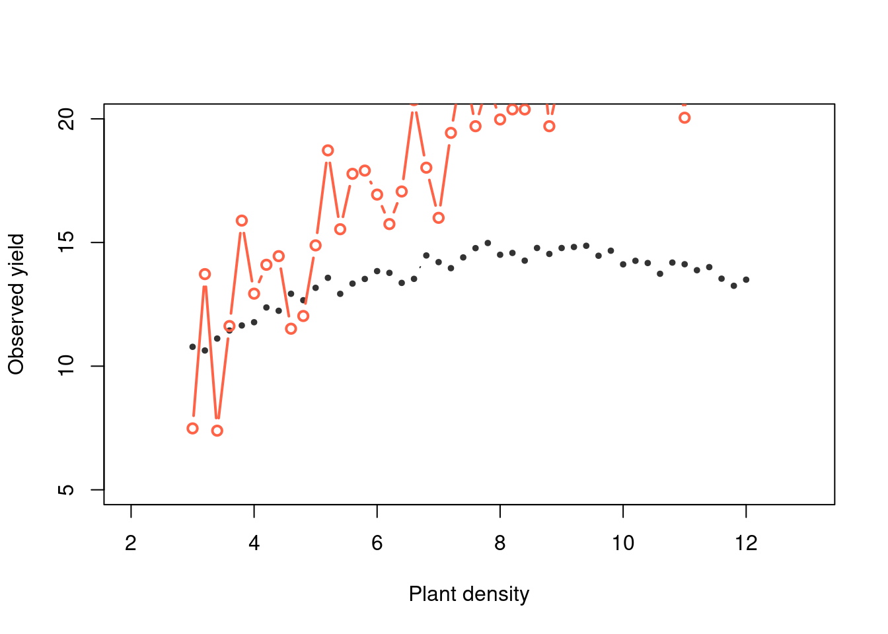
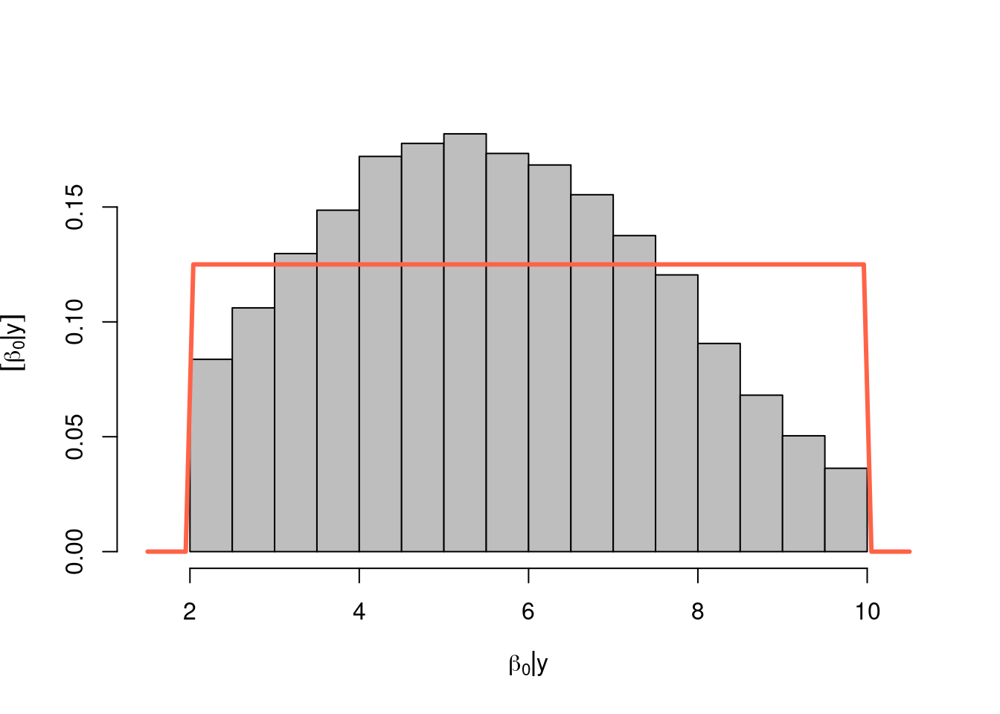
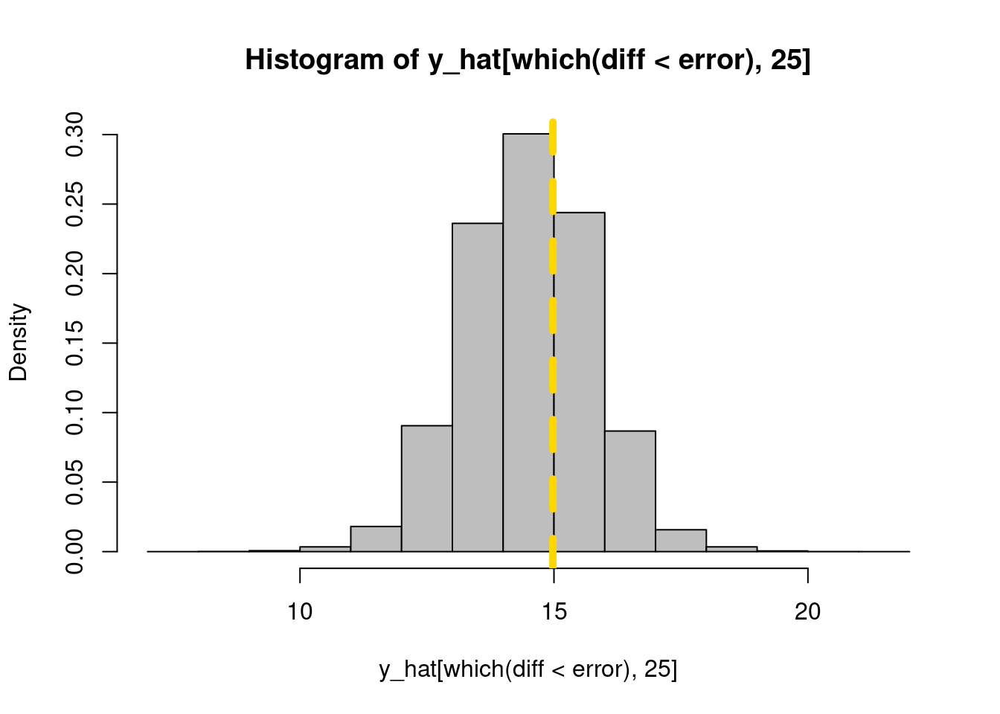
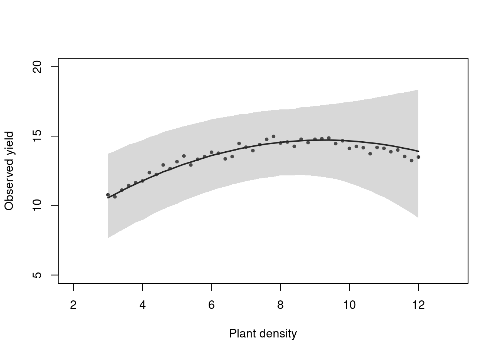

Code #2
Introduction to Bayesian Stats
This is a follow-up article from Bayes#1. Still, we do have numerous important concepts in order to understand what the computational codes are doing behind scenes when running a Bayesian analysis.
Important
Today’s Topics:
Computing posterior distributions:
#1. Acceptance/Rejection Sampling Basics:
#2. Markov Chain Monte Carlo (MCMC) More efficient than AR sampling.
Packages for Bayesian analysis in R:
#3. brms
#4. rstan
#5. rjags
Computing posterior distributions:
1. Acceptance/Rejection Sampling Basics:
1. Generate proposal parameter values 2. Generate data with those parameters
3. Compare the simulated data with the observed data = “difference” 4. “Accept” that combination of parameters if the difference < predifined acceptable error. “Reject” if the difference > predifined acceptable error.
See an example:
Using data of yield vesus plant density in corn:
\[ y = \beta_0 + x \cdot \beta_1 - x^2 \cdot \beta_2\]
- Generate proposal parameter values using the prior ditributions:
\[\beta_0 \sim uniform(4, 6)\]
\[\beta_1 \sim uniform(1, 3)\]
\[\beta_2 \sim uniform(0.5, 2)\]
\[\sigma \sim Gamma(2, 2)\]
set.seed(567)
b0_try <- runif(1, 4, 6) # Parameter model
b1_try <- runif(1, 1, 3) # Parameter model
b2_try <- rgamma(1, .5, 2) # Mathematical equation for process model
mu_try <- b0_try + x*b1_try - (x^2)*b2_try
sigma_try <- rgamma(1, 2, 2)- Generate data with those parameters
set.seed(567)
y_try <- rnorm(n, mu_try, sigma_try) # Process model- Compare the simulated data with the observed data = “difference”
# Record difference between draw of y from prior predictive distribution and
# observed data
diff[k, ] <- sum(abs(y - y_try))- “Accept” (gold) that combination of parameters if the difference < predifined acceptable error. “Reject” (red) if the difference > predifined acceptable error.
plot(x, y, xlab = "Plant density",
ylab = "Observed yield", xlim = c(2, 13), ylim = c(5, 20),
typ = "b", cex = 0.8, pch = 20, col = rgb(0.7, 0.7, 0.7, 0.9))
points(x, y_hat[k,], typ = "b", lwd = 2,
col = ifelse(diff[1] < error, "gold", "tomato"))


Now, what if whe change the priors:

Now, do many tries
for (k in 1:K_tries) {
b0_try <- runif(1, 2, 10) # Parameter model
b1_try <- rnorm(1, 2.2, .5) # Parameter model
b2_try <- rgamma(1, .25, 2) # Mathematical equation for process model
mu_try <- b0_try + x*b1_try - (x^2)*b2_try
sigma_try <- rgamma(1, 2, 2)
y_try <- rnorm(n, mu_try, sigma_try) # Process model
# Record difference between draw of y from prior predictive distribution and
# observed data
diff[k, ] <- sum(abs(y - y_try))
# Save unkown random variables and parameters
y_hat[k, ] <- y_try
posterior_samp_parameters[k, ] <- c(b0_try, b1_try, b2_try, sigma_try)
}Acceptance rate
length(which(diff < error))/K_tries[1] 0.035985Priors versus posteriors:



hist(y_hat[which(diff < error), 25], col = "grey", freq = FALSE)
abline(v = y[25], col = 'gold', lty = "dashed", lwd = 5)

Let’s get started
2. Markov Chain Monte Carlo
3. brms: Bayesian Regression Models using “Stan”

Documentation: https://paul-buerkner.github.io/brms/
Bug-reports: https://github.com/paul-buerkner/brms/issues
brms is a very handy R-package that facilitates running Bayesian models using a relatively simple syntax. It is basically and interface that runs “Stan” behind the scenes. It uses a syntax quite similar to the lme4 package.
It allows to use several different type of distributions and link functions for models that are linear, counts, survival, response, ordinal, zero-inflated, etc.
Due to its relatively simple syntax, today, we are going to start our Bayesian coding with brms.
More about brms at https://www.jstatsoft.org/article/view/v080i01

4. rstan: R interface to “Stan”

Documentation: https://mc-stan.org/rstan/
Bug reports: https://github.com/stan-dev/rstan/issues/
stan is a stand-alone open-source software platform designed for statistical modeling using high-performance statistical computation applying its own language. When selecting the Bayesian computational approach (i.e. rejection sampling criteria) there are several alternatives to choose. Stan produces Bayesian statistical inference following Hamiltonian Monte Carlo (HMC), and No-U-Turn Samples (NUTS). Besides R, stan has interfaces with other popular languages such as Python, MATLAB, Julia.
In contrast to brms, stan’s syntax is more complicated for begginers, but the positive side is that requires us to write the statistical model.
We will not fit a model directly with stan today, but brms brings a function that allows users to obtain the code to run the analysis by ourselves using rstan. Let’s see…
5. rjags: R interface to “Just Another Gibbs Sampler”
Documentation: https://mcmc-jags.sourceforge.io/
Bug reports: https://sourceforge.net/projects/mcmc-jags/
rjags is another popular option for Bayesian statistical inference following MCMC using R. Rjags produces Bayesian statistical inference following BUGS language (WinBUGS). Similar to stan, rjags it is probably not for beginner, since it requires us to write out the statistical model (although it is always ideal). To extract the posteriors, it also requires coda, which is especially designed for summarizing and plotting MCMC simulations.